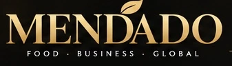
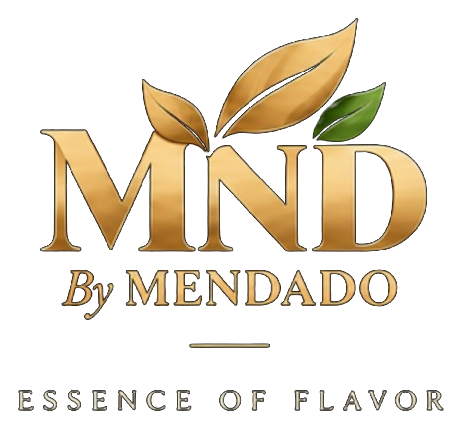
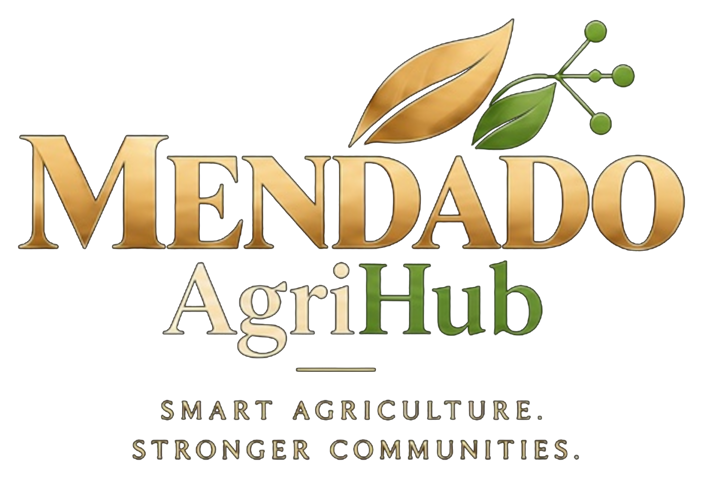

Master corporate brand
The corporate platform connecting business areas, specialist expertise, strategic partnerships and market opportunities.

Building Value. Connecting Markets. Creating Growth.
Mendado connects products, markets, expertise and digital innovation to create practical opportunities across food, agriculture and international business.
Mendado is an integrated corporate platform designed to connect high-quality products, capable partners, market opportunities and specialist expertise.
From food ingredients and private-label development to trade, export, agribusiness consulting and digital innovation, we bring connected thinking to every stage of the value chain.
Mendado, MND by Mendado and Mendado AgriHub work as connected parts of one corporate ecosystem—each with a focused role, all contributing to stronger value chains and market growth.
Master corporate brand
The corporate platform connecting business areas, specialist expertise, strategic partnerships and market opportunities.
Food and ingredients brand

Mendado’s food and ingredients brand for spices, dehydrated ingredients, customized solutions and market-ready products.
Agricultural digital ecosystem

A professional digital ecosystem connecting agricultural knowledge, operations, opportunities, services and communities.
Mendado combines commercial, operational and market-development capabilities to support products and businesses from concept to opportunity.
Food ingredients, spices, herbs, dehydrated products and application-focused solutions for professional markets.
Product-development, blending, packing and private-label coordination through selected qualified partners.
Structured sourcing and supply support connecting reliable origins, products and business customers.
Market-readiness, opportunity development and coordination supporting access to regional and international markets.
Professional market representation connecting companies, portfolios and commercial opportunities.
Strategic and operational support across agriculture, commercialization, organizational development and growth.
Brand, content, campaign and digital-market solutions designed to strengthen visibility and engagement.
Mendado’s food and ingredients brand
MND brings Mendado’s food-sector direction to life through spices, herbs, dehydrated ingredients, food bases and customized solutions for manufacturers, brands and professional users.
Manufacturing and packing requirements are coordinated through selected qualified partners against agreed product, quality and packaging specifications.
Discuss an MND opportunity →
Mendado connects sourcing, commercial understanding and export-development support to help suitable products move toward regional and international opportunity.
Our role is to coordinate market needs, capable suppliers, documentation readiness and commercial development—not to overstate capabilities or ownership.
Identifying and coordinating suitable origins and suppliers against agreed product, quality and commercial requirements.
Integrated Digital Agriculture Ecosystem
Mendado AgriHub is Mendado’s integrated digital agriculture ecosystem, designed to connect farm operations, trusted knowledge, market opportunities, expert services and professional communities in one place.
It brings together farmers, agronomists, companies, suppliers and market partners to support better decisions, stronger collaboration and more sustainable growth across the agricultural value chain.
Successful business relationships require more than products and transactions. They require understanding, consistency, responsiveness and integrated thinking.
Connecting product, operational, commercial and digital considerations around the full opportunity.
Working toward clear requirements, suitable partners and disciplined product and project expectations.
Commercial thinking informed by applications, customer needs and routes to market.
Coordinating selected suppliers, manufacturers and specialists appropriate to the agreed scope.
Connecting Egyptian and regional potential with wider market requirements and opportunities.
Using business insight and digital thinking to create useful, scalable solutions.
Tell us what you are trying to develop, source, represent or grow. We will use your inquiry to identify the most relevant Mendado business area.
Your inquiry will open as a prepared email to Development@mendado.com.